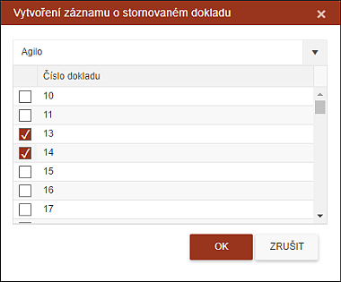
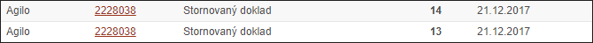

Souvislost řady pokladních dokladů
Supervizor si může překontrolovat souvislost řady pokladních dokladů. Číslo pokladního dokladu je zadáváno do systému procesem Výběr hotovosti.
Supervizor si vybere inspektora a systém vypíše všechny chybějící čísla dokladů.

Pokud dostane supervizor některé doklady do ruky jako chybně vypsané či zničené, může zaškrtnutím příslušného (příslušných) čísla dokladu a stisknutím tlačítka OK vygenerovat záznam o evidenci tohoto dokladu jako poničeném. Mezi doklady je vložen řádek s popisem "Stornovaný doklad".
